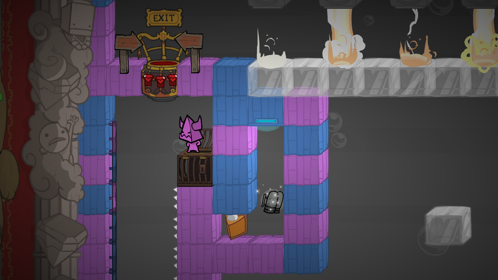
This project is a custom level created for Battle Block Theatre for a Level Design course.
The project was split into three phases: planning, building and reflecting.
The planning phase required playing the game, making a blueprint and submitting a write-up of the level intentions.
The building phase consisted of creating the level in the Battle Block Theatre level editor,
and testing to ensure it could be completed.
The reflection phase consisted of an in-class playtest and write-up of the results
and what changes to make for future iterations.
Battle Block Theatre is a rather violent 2D platforming game where the player seeks to free
their fellow sailors that have been marooned and imprisoned on an island. The "stages" they play through
are for the entertainment of the cat-people native to the island. It is generally expected that players
exploring custom levels have completed the main game.
For my level, I wanted to add a lot of verticality. The player starts high up, drops down, and has to
use jetpacks to fly back up. Overall, the level is more of a platforming puzzle, where the player needs
to make use of the objects around them to get through each section.
There are also optional combat sections for players who enjoy that aspect of the game.
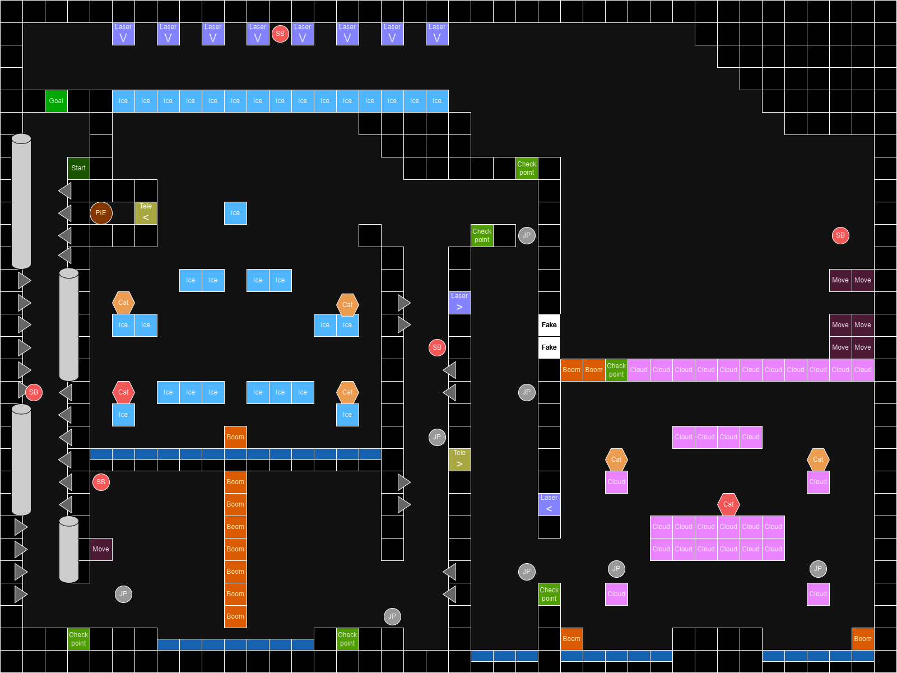
The drafted plan for the level.
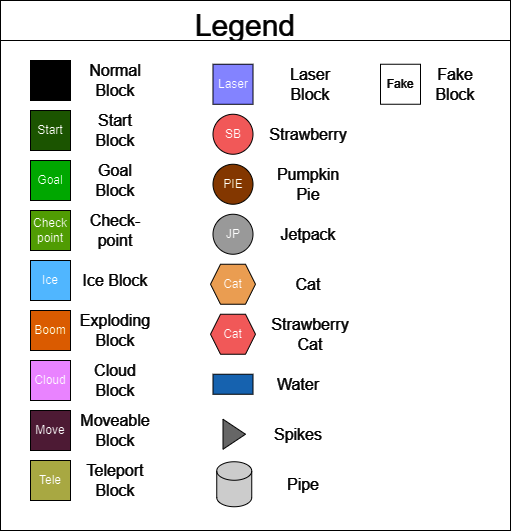
The legend for the drafted plan.
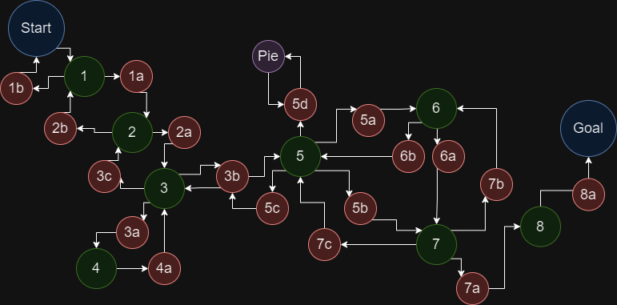
A bubble graph showing engagements paths for the level.
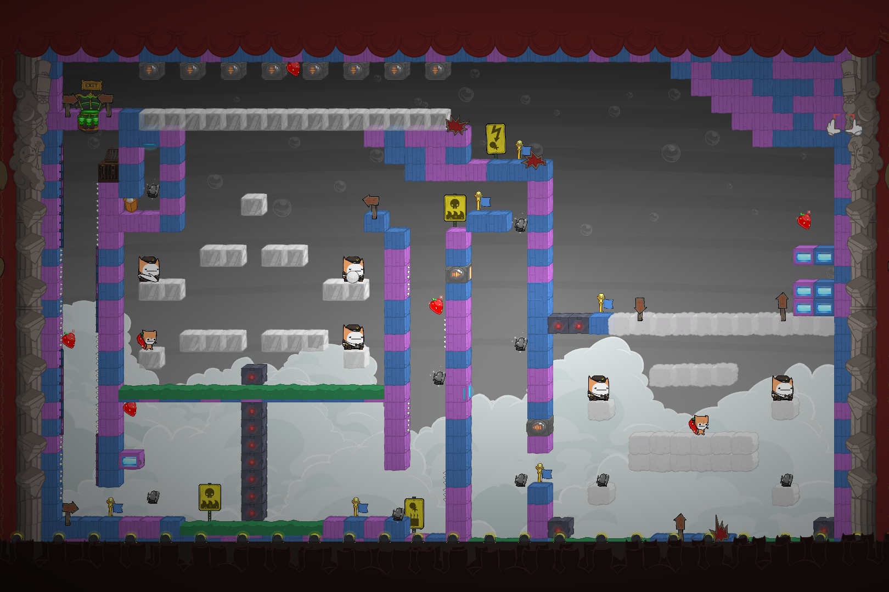
The level as seen in the level editor.
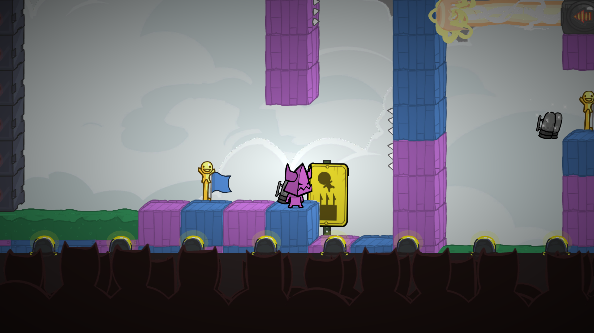
The start of an upwards jetpack tunnel.
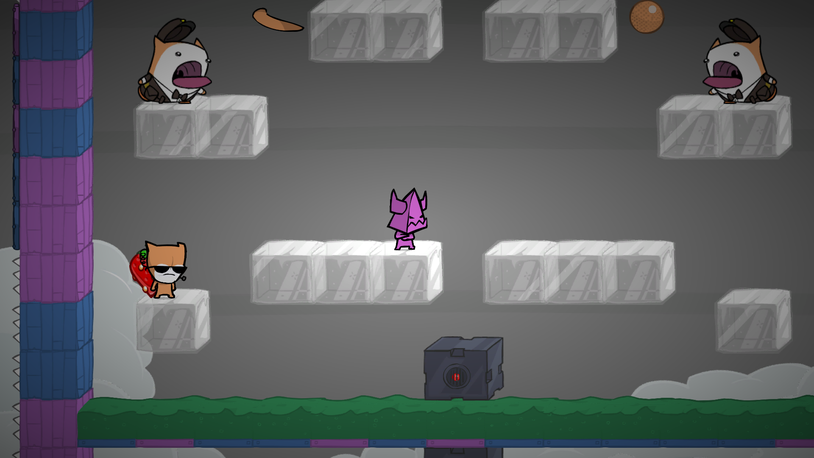
The first battle arena area.
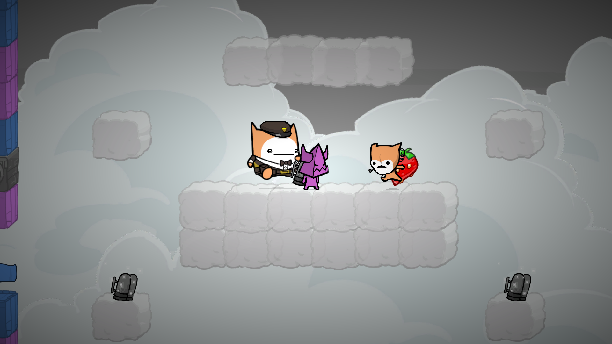
The second battle arena area.
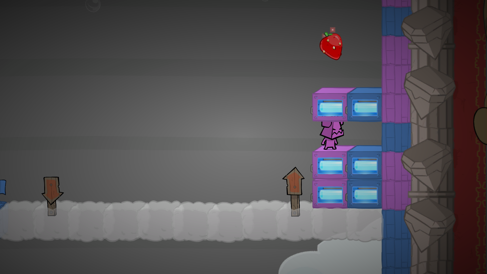
The stair puzzle in the level.
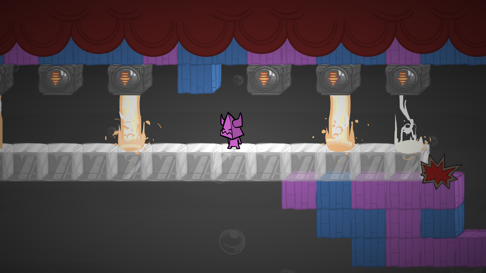
The middle of a laser gauntlet.
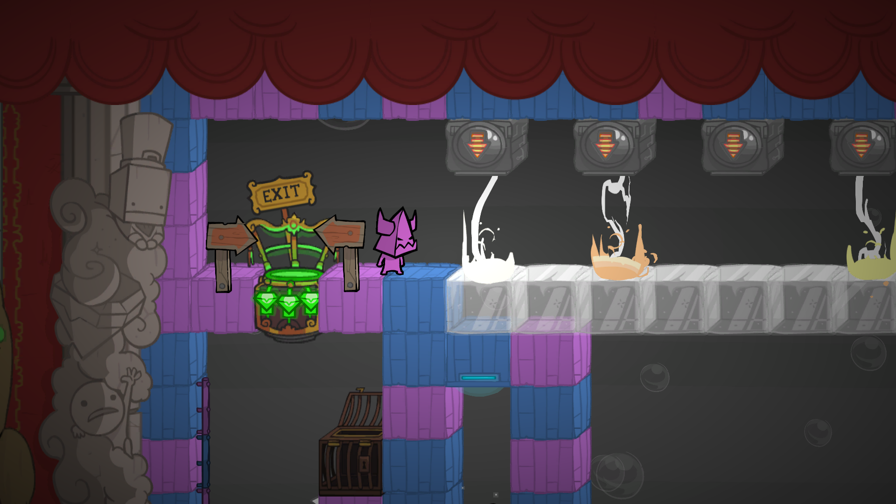
The end of the level.